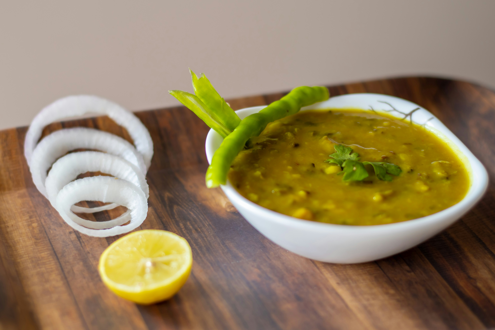

Dal Tadka

Description
A comforting and protein-rich lentil soup that's perfect for a quick weeknight meal.
Ingredients
- 1 cup brown lentils (masoor dal)
- 1 tbsp vegetable oil
- 1 tsp cumin seeds
- 1 bay leaf
- 1 medium onion, chopped
- 2 cloves garlic, minced
- 1 inch ginger, grated
- 1 green chili, chopped (optional)
- 1 tsp ground coriander
- 1/2 tsp turmeric powder
- 1 tsp red chili powder (adjust to spice preference)
- 4 cups water
- Salt to taste
- 1 tbsp ghee or butter
- 1 dried red chili pepper
- 1 tsp chopped fresh coriander leaves (cilantro)
- 1 (14.5 oz) can diced tomatoes, undrained
Steps
- Rinse the lentils in water until the water runs clear.
- Heat oil in a pressure cooker or pot over medium heat. Add cumin seeds and bay leaf. Once the cumin seeds splutter, add the chopped onion and cook until softened.
- Add garlic, ginger, and green chili (if using) and cook for 30 seconds.
- Add coriander powder, turmeric powder, and red chili powder. Stir and cook for a minute.
- Add the diced tomatoes with their juices and cook for 2 minutes.
- Rinse the lentils again and add them to the pot along with water. Season with salt.
- If using a pressure cooker, close the lid and cook for 15-20 minutes on high pressure. Let the pressure release naturally for 10 minutes before opening the lid. If using a pot, simmer for 30-40 minutes, or until the lentils are tender.
- While the lentils are cooking, prepare the tadka (tempering). Heat ghee or butter in a small pan over medium heat. Add the dried red chili pepper and cook for a few seconds until fragrant.
- Mash the cooked lentils slightly with a potato masher (optional for a thicker soup).
- Pour the tadka over the dal and garnish with chopped coriander leaves. Serve hot with rice or roti.